41. 克隆型分析#
关键要点
克隆扩增（Clonal Expansion）：特定的淋巴细胞在免疫刺激下增殖，这会降低克隆多样性，但提高扩增克隆的丰度。这一过程对理解免疫应答至关重要，因为它反映了细胞从初始（naive）状态向效应细胞和记忆细胞的转变。
基因片段使用与谱型（Spectratype）：V(D)J 基因片段的重排呈现出偏好性使用，谱型分析则测量 CDR3 长度的多样性。两者结合，有助于识别免疫优势克隆型，并刻画免疫库的模式。
环境设置
安装 conda:
在创建环境之前，请确保 conda 已安装在您的系统中。
保存 yml 内容:
将 yml 选项卡中的内容复制到名为
environment.yml的文件中。
创建环境:
打开终端或命令提示符。
运行以下命令：
conda env create -f environment.yml
激活环境:
创建好环境后，使用以下命令激活它：
conda activate <environment_name>
替换
<environment_name>，名称就是在environment.yml文件中指定的那个。在 yml 文件里，它看起来像这样：name: <environment_name>
验证安装:
通过运行以下命令，检查环境是否创建成功：
conda env list
41.1. 克隆扩增：多样性和丰度#
一般来说，淋巴细胞处于静息状态，直到接收到外部信号（识别外来因子的表位）或来自自分泌因子的刺激（由同一机体发出、作为先天免疫系统应答一部分的信号）。结果，特定细胞会急剧增殖，以执行它们被预先设定好的防御反应，这一过程称为克隆扩增（clonal expansion） [Polonsky et al., 2016]。它指的是：由于同一种 IR 在许多不同细胞中大量出现（即扩增的克隆），从而识别出特定细胞发生了增殖。这种扩增提示了细胞从初始淋巴细胞向成熟的效应淋巴细胞和记忆淋巴细胞的分化，有助于解释结果，也与此前的细胞注释相互印证 [Polonsky et al., 2016]。另一方面，在分析扩增克隆时，还应考虑一些衍生过程，例如克隆竞争（两个或多个正在扩增的克隆争夺同一空间）、克隆优势（单个扩增的克隆细胞数量超过其余克隆细胞）以及旁观者激活（T 细胞被细胞因子激活，而非通过 T 细胞受体偶联激活） [Naxerova, 2020][Ashcroft et al., 2017][Kim and Shin, 2019].
在给定空间内，每个克隆型的细胞数量会发生动态变化，这使我们可以借用种群生物学的概念，如多样性（diversity）和丰度（abundance）。多样性定义为某一区域或群落中物种的数量及其个体数量，而丰度则是同一物种个体的数量或频率 [Travlos et al., 2018]。在这里，我们可以把“物种”换成“克隆”，以明确它们在单细胞 IR 分析中的含义。如果在某种特定细胞类型（如效应 CD8+ T 细胞）中检测到很强的克隆扩增，那么克隆的数量预计会减少——因为扩增的克隆在此过程中占据了空间，牺牲了其他可用的受体选择。因此，对这种细胞类型，我们预期其多样性会降低。另一方面，对于扩增的克隆，我们预期其丰度会上升，因为属于该特定克隆的个体（细胞）数量增加了（可通过每个克隆 ID 对应的细胞数来观察）。
41.2. 基因片段的使用和谱型#
通过重排 V(D)J 片段来塑造 T 细胞或 B 细胞受体的过程，一般认为会产生随机序列，因此 V(D)J 序列的分布本应服从均匀分布。然而，人们观察到 V(D)J 基因的使用频率在不同个体之间高度一致，这表明在所用的 V(D)J 基因片段上存在偏好性选择 [Elhanati et al., 2014]。由此，我们可以从两个角度分析基因片段的使用情况：每种细胞类型中最常用基因片段的丰度，以及每个个体、每种细胞类型中最丰富片段的频率 [Chernyshev et al., 2021]。同样，考虑到我们知道每个细胞免疫受体的氨基酸组成，就可以确定感兴趣的 V(D)J 片段的确切组合。
另一方面，V(D)J 基因片段的重组、以及 V 与 J 片段之间不精确的连接，会产生长度可变的 CDR3 区域。谱型（spectratype）分析可视为：通过不同细胞类型中 CDR3 区域的长度多样性，来衡量其异质性 [Ciupe et al., 2013]。这一测量与克隆扩增、基因片段使用情况相结合，为定义那些被充分描述的免疫优势克隆型提供了证据。
41.3. TCR 数据准备#
在这里，以及在预处理步骤中，我们将使用来自 Scirpy 库中的工具来进行分析，并把结果存放在 AnnData 对象。
警告
Scirpy 更改了 其数据结构的格式 （在 v0.13 中）。虽然整体分析流程没有改变，但本章中展示的一些输出可能不再准确。
请参阅 scirpy 发布说明 ，了解关于此变化的更多细节。在更新本章之前，请参考 scirpy 官方文档.
import warnings
warnings.filterwarnings(
"ignore",
".*IProgress not found*",
)
warnings.simplefilter(action="ignore", category=FutureWarning)
import numpy as np
import pandas as pd
import scanpy as sc
import scirpy as ir
from palmotif import compute_motif, svg_logo
warnings.simplefilter(action="ignore", category=pd.errors.DtypeWarning)
sc.logging.print_versions()
WARNING: If you miss a compact list, please try `print_header`!
-----
anndata 0.8.0
scanpy 1.6.1
sinfo 0.3.1
-----
Levenshtein NA
PIL 8.1.0
adjustText NA
airr 1.3.1
anndata 0.8.0
anyio NA
attr 20.3.0
babel 2.9.0
backcall 0.2.0
brotli 1.0.9
certifi 2020.12.05
cffi 1.14.4
chardet 4.0.0
cloudpickle 1.6.0
constants NA
cycler 0.10.0
cython_runtime NA
dask 2020.12.0
dateutil 2.8.1
decorator 4.4.2
future_fstrings NA
get_version 2.1
google NA
h5py 3.7.0
highs_wrapper NA
idna 2.10
igraph 0.8.3
ipykernel 5.4.3
ipython_genutils 0.2.0
ipywidgets 7.6.3
jedi 0.18.0
jinja2 2.11.2
joblib 1.0.0
json5 NA
jsonschema 3.2.0
jupyter_server 1.2.1
jupyterlab_server 2.1.2
kiwisolver 1.3.1
legacy_api_wrap 1.2
leidenalg 0.8.3
llvmlite 0.35.0
louvain 0.7.0
lxml 4.6.2
markupsafe 1.1.1
matplotlib 3.3.3
mpl_toolkits NA
natsort 7.1.0
nbclassic NA
nbformat 5.1.1
networkx 2.5
numba 0.52.0
numexpr 2.7.2
numpy 1.19.5
packaging 20.8
pandas 1.2.0
parasail 1.2.4
parso 0.8.1
pexpect 4.8.0
pickleshare 0.7.5
pkg_resources NA
prometheus_client NA
prompt_toolkit 3.0.10
ptyprocess 0.7.0
pvectorc NA
pygments 2.7.4
pyparsing 2.4.7
pyrsistent NA
pytz 2020.5
requests 2.25.1
scanpy 1.6.1
scipy 1.6.0
scirpy 0.11.0
seaborn 0.11.1
send2trash NA
setuptools_scm NA
sinfo 0.3.1
six 1.15.0
sklearn 0.24.0
sniffio 1.2.0
sparse 0.11.2
statsmodels 0.12.1
storemagic NA
tables 3.6.1
texttable 1.6.3
tlz 0.11.1
toolz 0.11.1
tornado 6.1
tqdm 4.56.0
tracerlib NA
traitlets 5.0.5
typing_extensions NA
urllib3 1.26.2
wcwidth 0.2.5
yaml 5.3.1
yamlordereddictloader NA
zmq 21.0.0
-----
IPython 7.19.0
jupyter_client 6.1.11
jupyter_core 4.7.0
jupyterlab 3.0.4
notebook 6.2.0
-----
Python 3.8.6 (default, Jan 14 2021, 17:39:54) [GCC 8.3.0]
Linux-3.10.0-1160.25.1.el7.x86_64-x86_64-with-glibc2.28
48 logical CPU cores
-----
Session information updated at 2022-08-12 11:05
path_data = "/home/icb/juan.henao/BestPracticeStart/data"
path_gex = f"{path_data}/TCR_filtered.h5ad"
adata = sc.read(path_gex)
Note
在进行任何分析之前，必须缩小数据规模，以降低本教程的计算开销，并使其在时间上更可行。
为此，我们选取了六个样本，确保不同的中心和医疗状态都有代表。
adata = adata[
adata.obs["patient_id"].isin(
["COVID-014", "CV0902", "AP6", "COVID-045", "COVID-066", "COVID-067"]
)
]
# adata[adata.obs['Status'] == 'Healthy'].obs['patient_id']
_ = ir.pl.group_abundance(
adata,
groupby="patient_id",
target_col="chain_pairing",
normalize=True,
figsize=[10, 10],
)
/home/juan.henao/.local/lib/python3.8/site-packages/anndata/compat/_overloaded_dict.py:106: ImplicitModificationWarning: Trying to modify attribute `._uns` of view, initializing view as actual.
self.data[key] = value
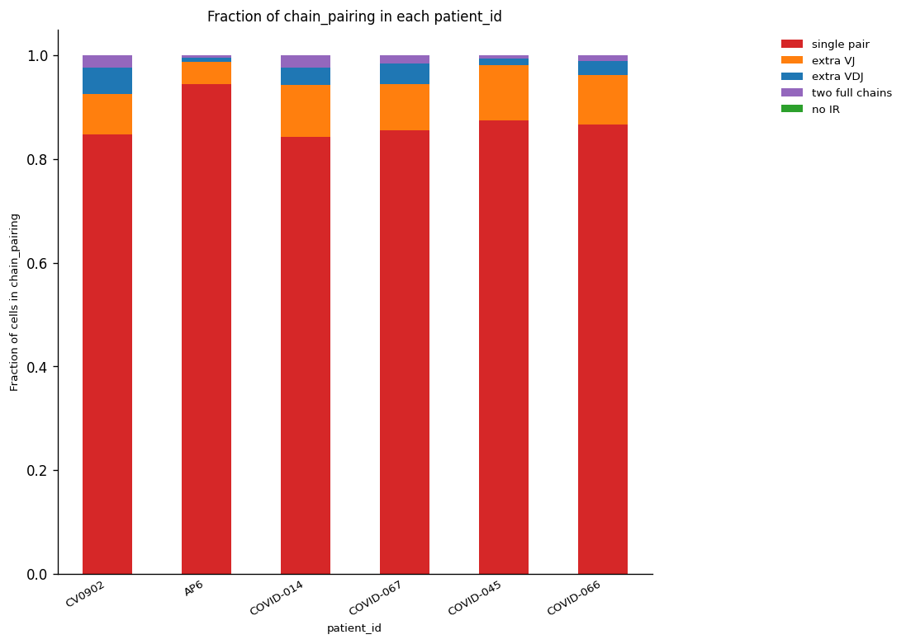
41.4. 克隆型定义#
定义克隆型的一种方法，是检测 VJ CDR3 和 VDJ CDR3 完全相同的所有序列。由于它能定义可信的细胞谱系，这是最常用的方法。不过，处理这一问题的另一种方法是计算序列之间的距离；这种方法限制性较强，但对于检验一些关于复杂免疫表型的假设可能很有用。
ir.pp.ir_dist(adata, sequence="aa")
一旦获得了 T 细胞之间在 V(D)J CDR3 上的同一性，就可以定义对应于某个特定克隆型的细胞簇。考虑到上一步所用的参数，一个克隆型就是一组序列相同的细胞。不过，也可以把克隆型定义为仅 VJ 序列相同、或仅 VDJ 序列相同的一组细胞。此外，还可以通过比较 VJ 或 VDJ 序列中的任一对或两对来定义克隆型。
用于定义克隆型的参数集，应与此前使用的相同。在我们的例子中，氨基酸序列必须以“同一性”作为度量来比较。此外，我们还设定额外参数：在 V(D)J 相同时，以最丰富的那一对作为目标序列来定义克隆型。
ir.tl.define_clonotype_clusters(
adata, sequence="aa", receptor_arms="all", dual_ir="primary_only"
)
把结果可视化的方法是通过一个网络：每个节点代表一个克隆型（细胞簇），其大小代表在该簇中检测到的细胞数量。它们被标上数字 ID，但顺序是随机给定的，除了用于识别感兴趣的克隆型之外，并不传达其他信息。
要生成该网络，需要先确定随后用于绘图的布局。这个参数应是 igraph 库提供的布局之一。此外，建议至少设置 min_cells ≥2，以避免图中被单元素克隆（singleton，只有一个细胞作为成员的克隆型）挤得过满。这里，我们把该参数设为 ≥50，以便只显示最大的克隆型，使预期结果更易于观察。
ir.tl.clonotype_network(adata, min_cells=50, sequence="aa")
现在可以绘制该网络了，结果就如下图所示。如前所述，每个节点（圆圈）代表一个克隆型，并以唯一的编号作为 ID。此外，圆圈大小代表属于该特定克隆型的细胞数量。
另一方面，我们按样本来设定颜色，以观察某个克隆型是否出现在两个或更多样本中；这类克隆型被称为 公共克隆型 ，它们很受关注，因为它们代表了共有的免疫应答，因此是解释所研究疾病/表型整体反应的候选对象。除此之外，还有一类 私有克隆型 ，代表患者/样本特异的克隆反应，对于个性化医疗的分析可能很有意思。如下所示，最大的几个克隆型都只由私有（private）克隆型组成。
_ = ir.pl.clonotype_network(
adata,
color="patient_id",
base_size=10,
label_fontsize=9,
panel_size=(10, 10),
legend_fontsize=15,
)
... storing 'cc_aa_identity' as categorical
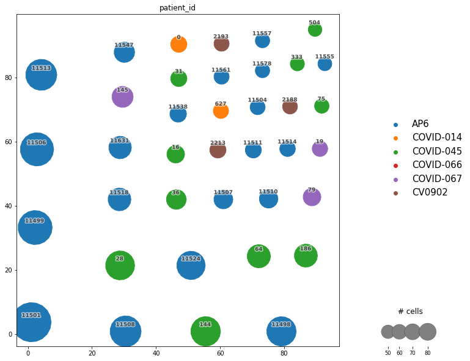
adata.obs["cc_aa_identity"] = adata.obs["cc_aa_identity"].astype("str")
如前所述，检测到的克隆型都带有编号标签，可用来提取更多信息。例如，下面我们提取 0 号克隆型的免疫序列。
adata.obs.loc[adata.obs["cc_aa_identity"] == "0", :].groupby(
[
"IR_VJ_1_junction_aa",
"IR_VDJ_1_junction_aa",
"receptor_subtype",
],
observed=True,
).size().reset_index(name="n_cells")
| IR_VJ_1_junction_aa | IR_VDJ_1_junction_aa | receptor_subtype | n_cells | |
|---|---|---|---|---|
| 0 | CAVSVVRNNNARLMF | CASSARGASGERTDTQYF | TRA+TRB | 71 |
41.5. 克隆扩增#
免疫细胞的正选择（例如用于激活免疫应答）会导致它们扩增（分裂），这反映为某个克隆型在一个或多个细胞中的出现。第一步是识别克隆扩增，并在 .obs 表中添加一列。
一旦识别出克隆扩增，就很容易把它可视化出来：把每种细胞类型中对应扩增克隆的细胞数量，绘制成堆叠条形图。
ir.tl.clonal_expansion(adata, target_col="cc_aa_identity")
_ = ir.pl.clonal_expansion(
adata,
groupby="initial_clustering",
target_col="cc_aa_identity",
clip_at=4,
normalize=False,
figsize=[10, 10],
)
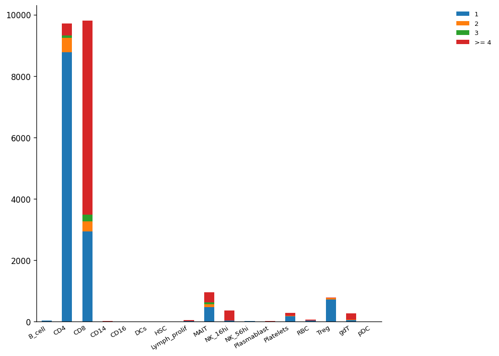
上图告诉我们 CD4+ 是最丰富的细胞类型。然而，CD8+ 显示出最多的扩增克隆型，这可能源于 CD8+ 效应细胞的正选择。
观察克隆扩增的另一种方法，是对各细胞类型簇的大小进行归一化。这样，CD4+ 与 CD8+ 之间克隆扩增的差异就更容易观察了。
_ = ir.pl.clonal_expansion(
adata, "initial_clustering", target_col="cc_aa_identity", figsize=[10, 10]
)
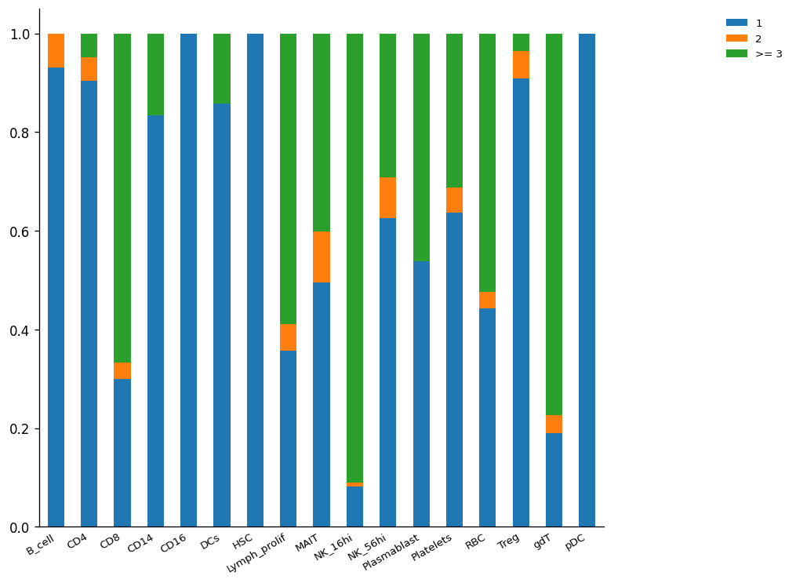
观察克隆扩增现象的另一种方法是通过 α 多样性的丧失。扩增的克隆多样性较低，因为某个特定群体（细胞簇）内来自同一类型（克隆）的个体（细胞）更多。多样性有不同类型，依据不同假设也有不同的计算方法。不过，在 TCR 分析中，我们感兴趣的是把这一概念与每个簇的克隆扩增联系起来，即某一特定特征集上变异性的降低（α 多样性）。
下图反映了这一假设：CD8+ 的 α 多样性低于 CD4+，因为考虑到构成 CD8+ 簇的细胞总数，CD8+ 效应细胞可能发生了克隆扩增，从而降低了其多样性。在 NK_16hi 和 gdT-cell 这两个簇中也观察到同样的现象，正如克隆扩增图所示（见上文），它们高度扩增。
_ = ir.pl.alpha_diversity(
adata, groupby="initial_clustering", target_col="cc_aa_identity", figsize=[10, 10]
)
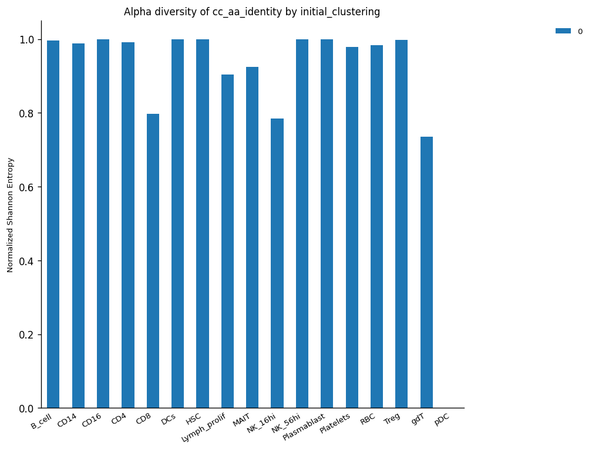
41.6. 克隆型丰度#
与多样性相反：对于某个细胞簇，多样性在发生克隆扩增时预计会降低，而丰度在发生克隆扩增时预计会上升，因为来自同一克隆的细胞数量增加了。
下一个函数有助于绘制最丰富的克隆型，显示其 ID、细胞数量，以及该克隆型所属的簇（细胞类型）。这里，我们突出显示最丰富的十个克隆型。
_ = ir.pl.group_abundance(
adata,
groupby="cc_aa_identity",
target_col="initial_clustering",
max_cols=10,
figsize=[10, 10],
)
... storing 'cc_aa_identity' as categorical
... storing 'clonal_expansion' as categorical
Using categorical units to plot a list of strings that are all parsable as floats or dates. If these strings should be plotted as numbers, cast to the appropriate data type before plotting.
Using categorical units to plot a list of strings that are all parsable as floats or dates. If these strings should be plotted as numbers, cast to the appropriate data type before plotting.
Using categorical units to plot a list of strings that are all parsable as floats or dates. If these strings should be plotted as numbers, cast to the appropriate data type before plotting.
Using categorical units to plot a list of strings that are all parsable as floats or dates. If these strings should be plotted as numbers, cast to the appropriate data type before plotting.
Using categorical units to plot a list of strings that are all parsable as floats or dates. If these strings should be plotted as numbers, cast to the appropriate data type before plotting.
Using categorical units to plot a list of strings that are all parsable as floats or dates. If these strings should be plotted as numbers, cast to the appropriate data type before plotting.
Using categorical units to plot a list of strings that are all parsable as floats or dates. If these strings should be plotted as numbers, cast to the appropriate data type before plotting.
Using categorical units to plot a list of strings that are all parsable as floats or dates. If these strings should be plotted as numbers, cast to the appropriate data type before plotting.
Using categorical units to plot a list of strings that are all parsable as floats or dates. If these strings should be plotted as numbers, cast to the appropriate data type before plotting.
Using categorical units to plot a list of strings that are all parsable as floats or dates. If these strings should be plotted as numbers, cast to the appropriate data type before plotting.
Using categorical units to plot a list of strings that are all parsable as floats or dates. If these strings should be plotted as numbers, cast to the appropriate data type before plotting.
Using categorical units to plot a list of strings that are all parsable as floats or dates. If these strings should be plotted as numbers, cast to the appropriate data type before plotting.
Using categorical units to plot a list of strings that are all parsable as floats or dates. If these strings should be plotted as numbers, cast to the appropriate data type before plotting.
Using categorical units to plot a list of strings that are all parsable as floats or dates. If these strings should be plotted as numbers, cast to the appropriate data type before plotting.
Using categorical units to plot a list of strings that are all parsable as floats or dates. If these strings should be plotted as numbers, cast to the appropriate data type before plotting.
Using categorical units to plot a list of strings that are all parsable as floats or dates. If these strings should be plotted as numbers, cast to the appropriate data type before plotting.
Using categorical units to plot a list of strings that are all parsable as floats or dates. If these strings should be plotted as numbers, cast to the appropriate data type before plotting.
Using categorical units to plot a list of strings that are all parsable as floats or dates. If these strings should be plotted as numbers, cast to the appropriate data type before plotting.
Using categorical units to plot a list of strings that are all parsable as floats or dates. If these strings should be plotted as numbers, cast to the appropriate data type before plotting.
Using categorical units to plot a list of strings that are all parsable as floats or dates. If these strings should be plotted as numbers, cast to the appropriate data type before plotting.
Using categorical units to plot a list of strings that are all parsable as floats or dates. If these strings should be plotted as numbers, cast to the appropriate data type before plotting.
Using categorical units to plot a list of strings that are all parsable as floats or dates. If these strings should be plotted as numbers, cast to the appropriate data type before plotting.
Using categorical units to plot a list of strings that are all parsable as floats or dates. If these strings should be plotted as numbers, cast to the appropriate data type before plotting.
Using categorical units to plot a list of strings that are all parsable as floats or dates. If these strings should be plotted as numbers, cast to the appropriate data type before plotting.
Using categorical units to plot a list of strings that are all parsable as floats or dates. If these strings should be plotted as numbers, cast to the appropriate data type before plotting.
Using categorical units to plot a list of strings that are all parsable as floats or dates. If these strings should be plotted as numbers, cast to the appropriate data type before plotting.
Using categorical units to plot a list of strings that are all parsable as floats or dates. If these strings should be plotted as numbers, cast to the appropriate data type before plotting.
Using categorical units to plot a list of strings that are all parsable as floats or dates. If these strings should be plotted as numbers, cast to the appropriate data type before plotting.
Using categorical units to plot a list of strings that are all parsable as floats or dates. If these strings should be plotted as numbers, cast to the appropriate data type before plotting.
Using categorical units to plot a list of strings that are all parsable as floats or dates. If these strings should be plotted as numbers, cast to the appropriate data type before plotting.
Using categorical units to plot a list of strings that are all parsable as floats or dates. If these strings should be plotted as numbers, cast to the appropriate data type before plotting.
Using categorical units to plot a list of strings that are all parsable as floats or dates. If these strings should be plotted as numbers, cast to the appropriate data type before plotting.
Using categorical units to plot a list of strings that are all parsable as floats or dates. If these strings should be plotted as numbers, cast to the appropriate data type before plotting.
Using categorical units to plot a list of strings that are all parsable as floats or dates. If these strings should be plotted as numbers, cast to the appropriate data type before plotting.
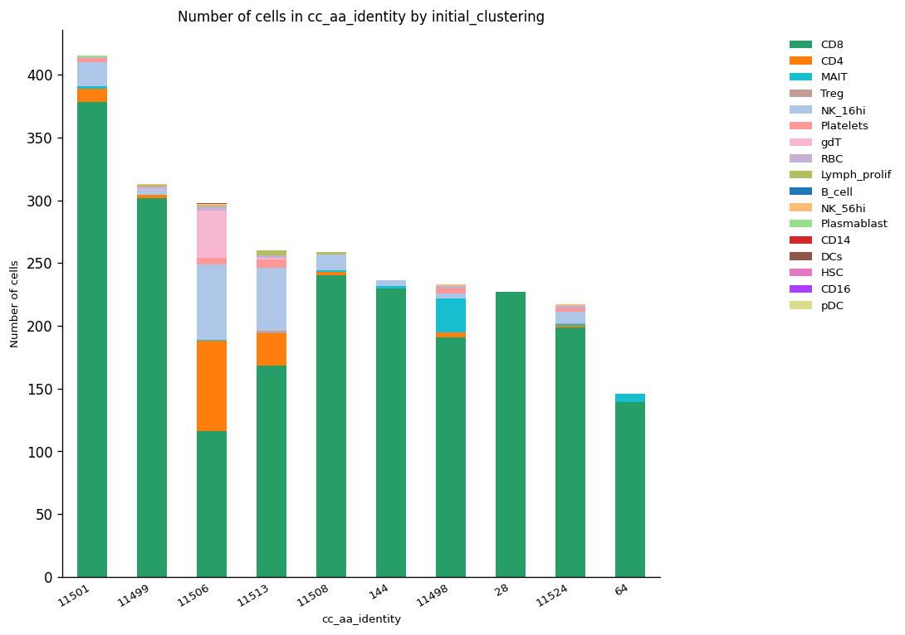
上图显示，克隆型 ID 11501 是扩增最多的，且存在于不止一个细胞簇中。不过，根据此前的结果，预计这个克隆型对应于同一个样本，因此涉及某一特定状况（COVID 或健康）。因此，值得重复绘制此图来检验这一假设。
此外，克隆扩增预计是对免疫事件的响应而发生的，这意味着可以预期：全部、或至少大多数扩增最多的克隆，应属于 COVID 组患者。
# By condition
_ = ir.pl.group_abundance(
adata,
groupby="cc_aa_identity",
target_col="Status",
max_cols=15,
fig_kws={"dpi": 100},
figsize=[10, 10],
)
# By sample
_ = ir.pl.group_abundance(
adata,
groupby="cc_aa_identity",
target_col="patient_id",
max_cols=15,
fig_kws={"dpi": 100},
figsize=[10, 10],
)
Using categorical units to plot a list of strings that are all parsable as floats or dates. If these strings should be plotted as numbers, cast to the appropriate data type before plotting.
Using categorical units to plot a list of strings that are all parsable as floats or dates. If these strings should be plotted as numbers, cast to the appropriate data type before plotting.
Using categorical units to plot a list of strings that are all parsable as floats or dates. If these strings should be plotted as numbers, cast to the appropriate data type before plotting.
Using categorical units to plot a list of strings that are all parsable as floats or dates. If these strings should be plotted as numbers, cast to the appropriate data type before plotting.
Using categorical units to plot a list of strings that are all parsable as floats or dates. If these strings should be plotted as numbers, cast to the appropriate data type before plotting.
Using categorical units to plot a list of strings that are all parsable as floats or dates. If these strings should be plotted as numbers, cast to the appropriate data type before plotting.
Using categorical units to plot a list of strings that are all parsable as floats or dates. If these strings should be plotted as numbers, cast to the appropriate data type before plotting.
Using categorical units to plot a list of strings that are all parsable as floats or dates. If these strings should be plotted as numbers, cast to the appropriate data type before plotting.
Using categorical units to plot a list of strings that are all parsable as floats or dates. If these strings should be plotted as numbers, cast to the appropriate data type before plotting.
Using categorical units to plot a list of strings that are all parsable as floats or dates. If these strings should be plotted as numbers, cast to the appropriate data type before plotting.
Using categorical units to plot a list of strings that are all parsable as floats or dates. If these strings should be plotted as numbers, cast to the appropriate data type before plotting.
Using categorical units to plot a list of strings that are all parsable as floats or dates. If these strings should be plotted as numbers, cast to the appropriate data type before plotting.
Using categorical units to plot a list of strings that are all parsable as floats or dates. If these strings should be plotted as numbers, cast to the appropriate data type before plotting.
Using categorical units to plot a list of strings that are all parsable as floats or dates. If these strings should be plotted as numbers, cast to the appropriate data type before plotting.
Using categorical units to plot a list of strings that are all parsable as floats or dates. If these strings should be plotted as numbers, cast to the appropriate data type before plotting.
Using categorical units to plot a list of strings that are all parsable as floats or dates. If these strings should be plotted as numbers, cast to the appropriate data type before plotting.
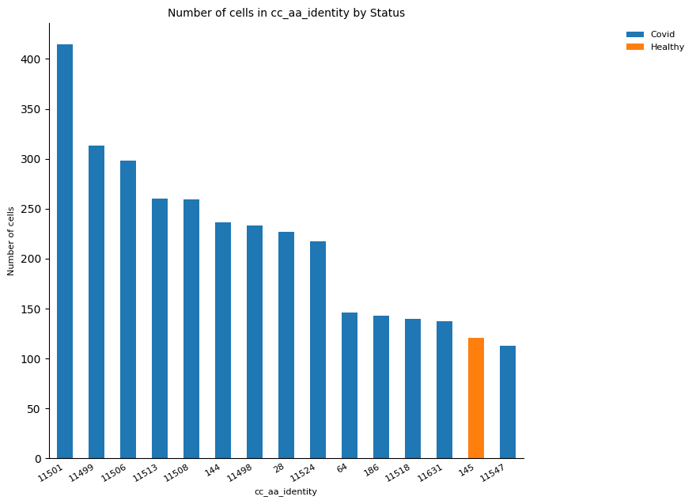
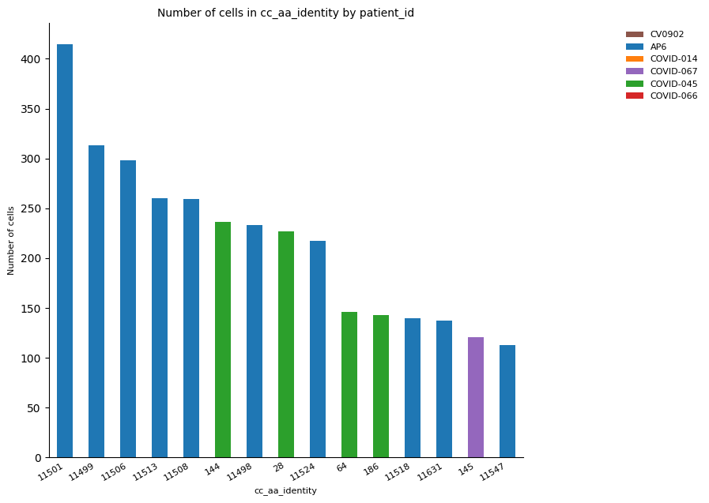
41.7. 基因的使用#
在前面的步骤中，我们分析了与克隆有关的数据——它们的扩增以及多样性和丰度。然而，我们也可以分析数据，来描述具体的 V(D)J 基因片段、它们在不同细胞簇之间的丰度，以及它们组合形成免疫受体的特定方式。
如引言所述，有一些证据表明基因片段存在选择性使用，使某些基因片段的使用优先于其他片段。因此，第一步是通过丰度分析检测出在这一现象中受偏好的片段。其背后的假设很直接：如果某个基因片段非常丰富，就意味着它在 IR 的最终组装中被选择性地选用了。
我们使用与计算克隆丰度相同的函数，计算了 VJ 链中 V 片段的丰度。ID 为 TRAV19 的序列是最丰富的 V 基因，主要存在于 CD8+ 细胞中。而第二丰富的 V 片段（TRAV29/DV5）则主要被 CD4+ 细胞簇选用。
_ = ir.pl.group_abundance(
adata,
groupby="IR_VJ_1_v_call",
target_col="initial_clustering",
normalize=False,
max_cols=10,
figsize=[10, 10],
)
# Normalized abundances
_ = ir.pl.group_abundance(
adata,
groupby="IR_VJ_1_v_call",
target_col="initial_clustering",
normalize=True,
max_cols=10,
figsize=[10, 10],
)
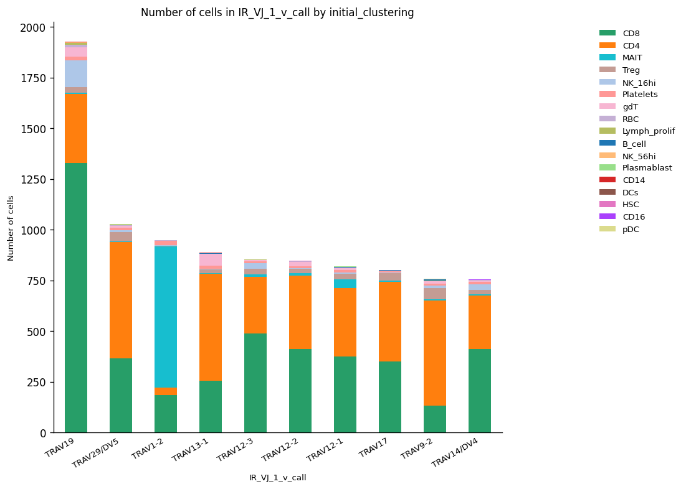
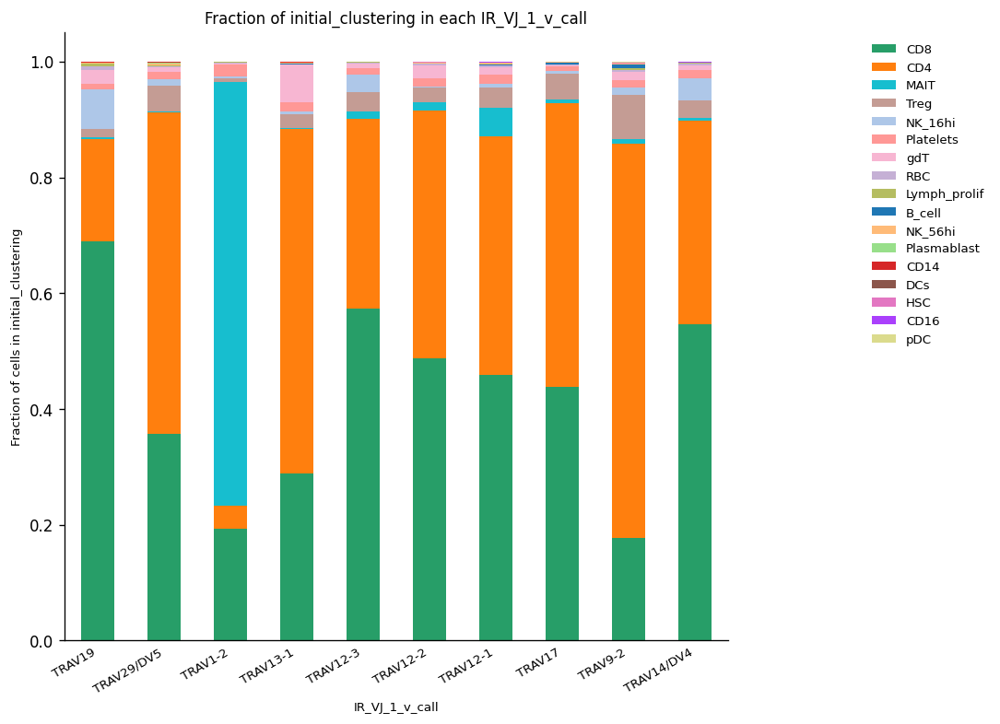
另一方面，可以选取感兴趣的片段列表，并检测这些片段在不同细胞簇中所代表的细胞比例。
这里，我们展示 VDJ 链的四个 V 片段。其中，TRBV18 片段在大多数细胞簇中最为丰富。
_ = ir.pl.group_abundance(
adata[
adata.obs["IR_VDJ_1_v_call"].isin(
["TRBV19", "TRBV10-1", "TRBV11-1", "TRBV7-9"]
),
:,
],
groupby="initial_clustering",
target_col="IR_VDJ_1_v_call",
normalize=True,
figsize=[10, 10],
)
/home/juan.henao/.local/lib/python3.8/site-packages/anndata/compat/_overloaded_dict.py:106: ImplicitModificationWarning: Trying to modify attribute `._uns` of view, initializing view as actual.
self.data[key] = value
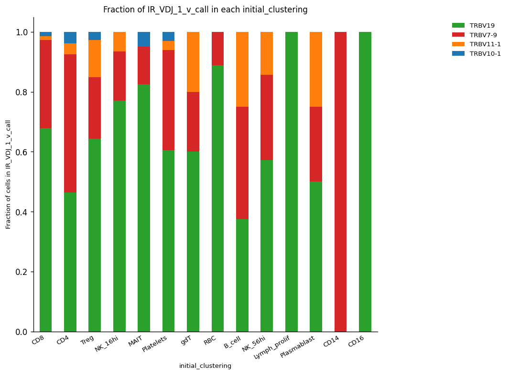
除了按丰度对单个、特定的 V(D)J 片段进行分析之外，还可以针对全部细胞，可视化 V、D、J 片段的某种特定组合（见下文）。它能提供宝贵的信息，说明不同的受偏好片段如何组合形成不同的 α 和 β IR 序列，以及它们与其余较少被选用片段之间的关系。
对这张图的一个假设是：最丰富的片段会组合在一起，呈现出某种线性的表现。然而，在随机的体细胞重组中，这些片段彼此独立，因此这一假设并不成立。
_ = ir.pl.vdj_usage(
adata,
full_combination=False,
max_segments=None,
max_ribbons=30,
fig_kws={"figsize": [10, 10]},
)
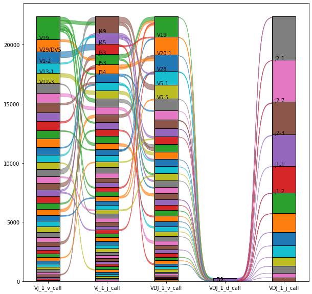
片段组合图显示，对于这里所用的来自原始实验的那组细胞和患者，所检测到的 VDJ 链只有一个 D 片段（TRBD2）。
和前面的图一样，也可以为一组特定的观测绘制片段组合图。在这里，我们重点检查上面突出的、TRBD2 片段呈阳性的那组克隆型的 V(D)J 片段组合。下一个例子中，我们使用了前五个克隆型 ID。
adata.obs[adata.obs["IR_VDJ_1_d_call"] == "TRBD2"].cc_aa_identity.value_counts()
5150 1
1815 1
4427 1
3500 1
4078 1
..
4734 0
4735 0
4736 0
4737 0
14180 0
Name: cc_aa_identity, Length: 14181, dtype: int64
_ = ir.pl.vdj_usage(
adata[
adata.obs["cc_aa_identity"].isin(["5150", "1815", "4427", "3500", "4078"]), :
],
max_ribbons=None,
max_segments=100,
fig_kws={"figsize": [10, 10]},
)
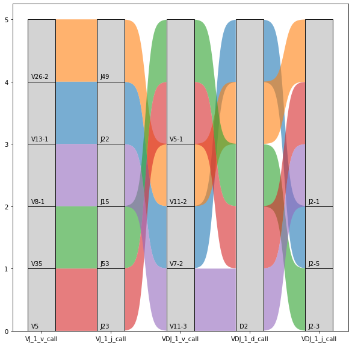
41.8. 谱型分析#
谱型分析提供了关于 V(D)J 序列异质性的更多信息。由于体细胞重组期间基因片段以伪随机方式被切割，并非所有 IR 序列都有相同数量的氨基酸。此外，谱型也是另一种基于最丰富序列长度来定义免疫优势的方法。如果大多数 V(D)J 序列长度相同，就意味着功能链应具有相同或相近数量的氨基酸。
下面，我们绘制了 VDJ 序列的丰度，最常见的长度是 15，紧随其后的是 14 个氨基酸，它们在多种细胞簇中被检测到，主要是 CD4+ 和 CD8+。我们突出显示后一种细胞类型，它此前被检测为高度克隆扩增。不过，我们甚至发现了长度为 10 或 21 个氨基酸的 VDJ 序列，但它们在整套 VDJ 序列中所占比例要少得多。
_ = ir.pl.spectratype(
adata,
cdr3_col="IR_VDJ_1_junction_aa",
color="initial_clustering",
viztype="bar",
fig_kws={"dpi": 120},
figsize=[10, 10],
)
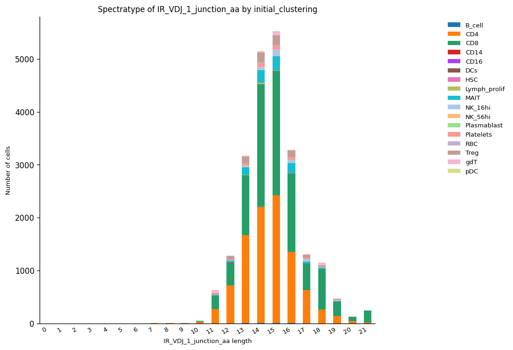
此外，还可以对每个细胞簇单独可视化 V(D)J 序列的长度分布，从而更好地看出哪些簇更接近最丰富的序列长度。下图显示了 CD4+ 和 CD8+ 的分布与前面整体长度丰度分析之间的关系，以及各簇分布的异质程度——例如 gdT 细胞的情况。
_ = ir.pl.spectratype(
adata,
cdr3_col="IR_VDJ_1_junction_aa",
color="initial_clustering",
viztype="curve",
curve_layout="shifted",
fig_kws={"figsize": [10, 10]},
kde_kws={"kde_norm": False},
)
/home/juan.henao/.local/lib/python3.8/site-packages/scirpy/pl/base.py:262: UserWarning: FixedFormatter should only be used together with FixedLocator
ax.set_yticklabels(order)
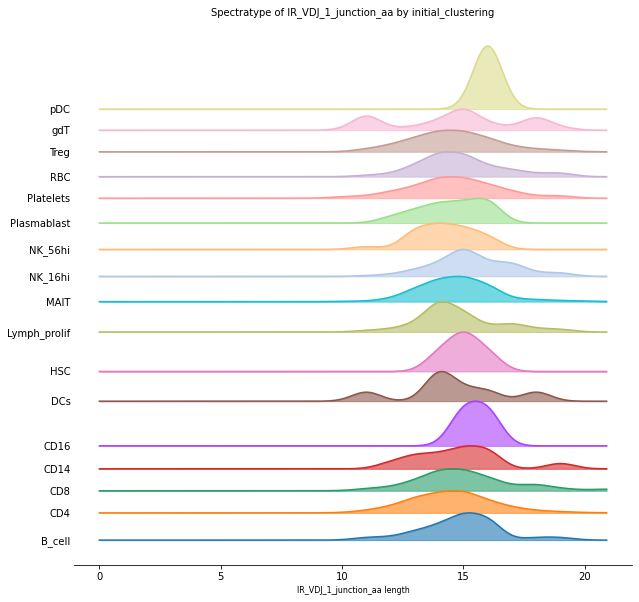
借助 AnnData 对象提供的便利，我们可以轻松地从谱型分析中提取更具体的信息。例如，我们可以按某个特定 V(D)J 基因片段在细胞簇中所占的比例，可视化其序列长度的分布。这里，我们选取了上一张基因使用图中所示的、来自 V(D)J 链的四个 V 片段。它们同样主要由长度为 15 的序列代表。TRBV5-1 最丰富，其次是 TRBV11-3，后者也主要表现为这一特定长度。
_ = ir.pl.spectratype(
adata[
adata.obs["IR_VDJ_1_v_call"].isin(
["TRBV5-1", "TRBV11-2", "TRBV7-2", "TRBV11-3"]
),
:,
],
cdr3_col="IR_VDJ_1_junction_aa",
color="IR_VDJ_1_v_call",
normalize="initial_clustering",
fig_kws={"dpi": 120},
figsize=[10, 10],
)
/home/juan.henao/.local/lib/python3.8/site-packages/anndata/compat/_overloaded_dict.py:106: ImplicitModificationWarning: Trying to modify attribute `._uns` of view, initializing view as actual.
self.data[key] = value
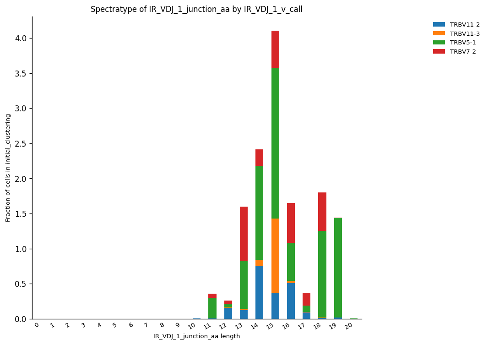
41.9. Motif 序列分析#
到目前为止，我们分析了 IR 序列的各种属性，它们为我们提供了可用于建立相似性的信息。然而，还需要直接比较序列本身，并能在氨基酸特定位置的层面上检测这些相似性。一个广泛使用的工具是绘制 logo 图（logo plot）：它显示每个位置上的氨基酸，每个字母的大小表示该字母在所分析的全部序列中重复出现的程度。
结合我们已有的信息，可以为所有长度为 15、且含上一步分析的五个 V 片段之一的 V(D)J 序列，绘制一张 logo 图。
为了绘制这张图，我们使用了 palmotif Python 库，此功能也在其他用于 TCR 分析的库中实现，例如 TCRdist3。该库以序列列表作为输入，并把 logo 图直接保存到指定的文件路径。
motif = compute_motif(
adata[
(
adata.obs["IR_VDJ_1_v_call"].isin(
["TRBV5-1", "TRBV11-2", "TRBV7-2", "TRBV11-3"]
)
)
& (adata.obs["IR_VDJ_1_junction_aa"].str.len() == 15),
:,
]
.obs["IR_VDJ_1_junction_aa"]
.to_list()
)
_ = svg_logo(
motif, "../_static/images/air_repertoire/logo_motif.svg", color_scheme="taylor"
)
结果保存为 logo_motif.svg，结果就是下面这张图。
如你所见，在本例所分析的所有序列中，前三个氨基酸都是 C-A-S，而最后一个氨基酸都是 F。此外，第 14 位可能是 Y、F、H 或 T。第四个氨基酸最可能是 S，其次才是 R 或 T。这类刻画在蛋白质谱（profile）发现中很有用，而这些发现又与蛋白质设计等进一步的实验工作相关。
41.10. 免疫组库比较#
IR 库（repertoire）可以用来识别样本之间的相似性，这有助于理解针对实验扰动的整体反应。 Scirpy 能够通过构建以下内容来比较样本：存放每个样本中各克隆型丰度的矩阵（df）、样本之间的 Jaccard 距离（dst）、以及用于层次聚类的连接（lk）。
df, dst, lk = ir.tl.repertoire_overlap(
adata, "patient_id", target_col="cc_aa_identity", inplace=False
)
df
| cc_aa_identity | 0 | 1 | 2 | 3 | 4 | 5 | 6 | 7 | 8 | 9 | ... | 14171 | 14172 | 14173 | 14174 | 14175 | 14176 | 14177 | 14178 | 14179 | 14180 |
|---|---|---|---|---|---|---|---|---|---|---|---|---|---|---|---|---|---|---|---|---|---|
| patient_id | |||||||||||||||||||||
| AP6 | 0.0 | 0.0 | 0.0 | 0.0 | 0.0 | 0.0 | 0.0 | 0.0 | 0.0 | 0.0 | ... | 0.0 | 0.0 | 0.0 | 0.0 | 0.0 | 0.0 | 0.0 | 0.0 | 0.0 | 0.0 |
| COVID-014 | 71.0 | 0.0 | 0.0 | 1.0 | 4.0 | 0.0 | 0.0 | 2.0 | 0.0 | 1.0 | ... | 1.0 | 0.0 | 0.0 | 0.0 | 0.0 | 1.0 | 1.0 | 0.0 | 0.0 | 0.0 |
| COVID-045 | 0.0 | 1.0 | 0.0 | 0.0 | 0.0 | 0.0 | 1.0 | 0.0 | 1.0 | 0.0 | ... | 0.0 | 0.0 | 1.0 | 1.0 | 1.0 | 0.0 | 0.0 | 0.0 | 1.0 | 0.0 |
| COVID-066 | 0.0 | 0.0 | 3.0 | 0.0 | 0.0 | 0.0 | 0.0 | 0.0 | 0.0 | 0.0 | ... | 0.0 | 0.0 | 0.0 | 0.0 | 0.0 | 0.0 | 0.0 | 0.0 | 0.0 | 0.0 |
| COVID-067 | 0.0 | 0.0 | 0.0 | 0.0 | 0.0 | 32.0 | 0.0 | 0.0 | 0.0 | 0.0 | ... | 0.0 | 1.0 | 0.0 | 0.0 | 0.0 | 0.0 | 0.0 | 1.0 | 0.0 | 1.0 |
| CV0902 | 0.0 | 0.0 | 0.0 | 0.0 | 0.0 | 0.0 | 0.0 | 0.0 | 0.0 | 0.0 | ... | 0.0 | 0.0 | 0.0 | 0.0 | 0.0 | 0.0 | 0.0 | 0.0 | 0.0 | 0.0 |
6 rows × 14181 columns
dst
array([1. , 1. , 1. , 1. , 1. ,
1. , 1. , 1. , 1. , 1. ,
1. , 1. , 1. , 0.99982818, 1. ])
lk
array([[3. , 5. , 0.99982818, 2. ],
[0. , 1. , 1. , 2. ],
[2. , 7. , 1. , 3. ],
[6. , 8. , 1. , 5. ],
[4. , 9. , 1. , 6. ]])
先前的数据可以显示为热图，便于对结果进行解释。举例来说，患者 COVID-066 和 CV0902 彼此最相似，尽管它们之间的距离很小。有意思的是，这两个样本来自不同的中心， COVID-066 来自纽卡斯尔， CV0902 则来自剑桥。
ir.pl.repertoire_overlap(
adata, "patient_id", target_col="cc_aa_identity", heatmap_cats=["Centre"]
)
<seaborn.matrix.ClusterGrid at 0x7ff53cc2e2b0>
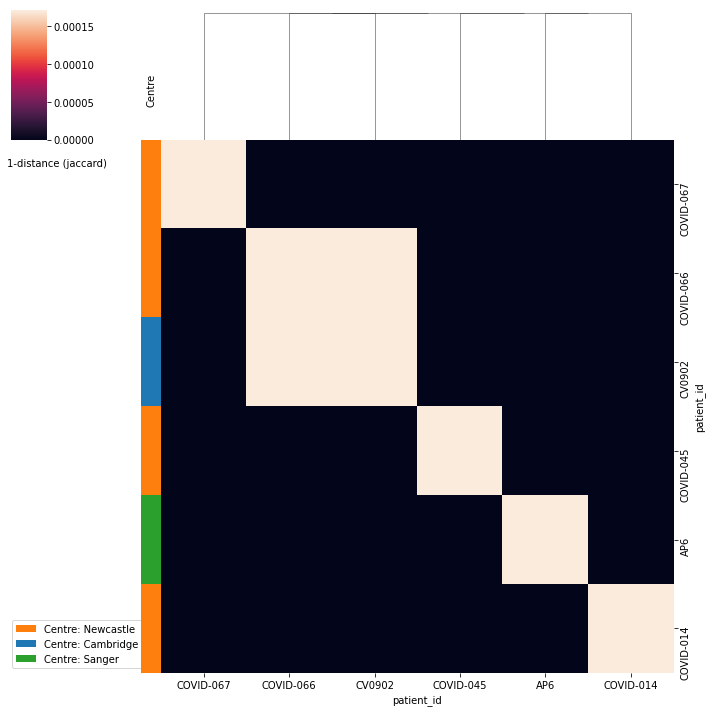
一旦检测到样本之间的相似性，就可以分析感兴趣的样本对。一种方法是比较克隆型的大小（细胞数）以及共享某一特定大小的克隆型数量（ID）。从可视化角度看，散点图便于直观解读比较结果。这里，我们比较了样本 COVID-067 对 CV0902 ——这里参考了上面对热图的解读。
下面的散点图显示，这两个样本的特点都是有大量小尺寸的克隆型。具体来说， COVID-067 所呈现的、含大量细胞（大尺寸）的克隆型，要多于 CV0902.
_ = ir.pl.repertoire_overlap(
adata,
"patient_id",
pair_to_plot=["COVID-067", "CV0902"],
fig_kws={"figsize": [10, 10]},
)
No handles with labels found to put in legend.
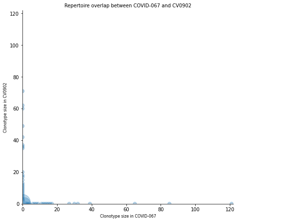
41.11. 使用 Dandelion 的 BCR 数据分析#
到目前为止，我们已经展示了可用来刻画 T 细胞受体库的全部分析，包括细胞克隆的识别与扩增，以及它们在细胞簇和生物样本两个层面的呈现；此外还有 V(D)J 基因片段的序列基序（motif），它通过对基因使用和谱型结果的解读而被凸显出来。
这些方法同样可以用于刻画 B 细胞受体 [Gupta et al., 2015]。不过，在 B 细胞的一生中，V 基因片段会发生体细胞突变，帮助低亲和力受体获得高亲和力表型。这一过程被称为 亲和力成熟，而这种突变的高发生率（约为种系细胞的 10000 倍）被称为 体细胞高频突变 [Papavasiliou and Schatz, 2002]。因此，B 细胞的克隆型定义应当考虑这一现象。处理它的一种方法是基于距离的克隆型分析。
在这里，我们使用 Dandelion，一个专注于 BCR 分析的 Python 库，它可与以下工具互操作： Scanpy 和 Scirpy 并提供了一种基于距离的 BCR 克隆定义方法，下文对此有更详细的解释。 [Stephenson et al., 2021].
import warnings
warnings.filterwarnings(
"ignore",
".*IProgress not found*",
)
warnings.simplefilter(action="ignore", category=FutureWarning)
import dandelion as ddl
import matplotlib as mpl
import matplotlib.pyplot as plt
import pandas as pd
import scanpy as sc
import scirpy as ir
from palmotif import compute_motif, svg_logo
warnings.simplefilter(action="ignore", category=pd.errors.DtypeWarning)
sc.logging.print_versions()
WARNING: If you miss a compact list, please try `print_header`!
The `sinfo` package has changed name and is now called `session_info` to become more discoverable and self-explanatory. The `sinfo` PyPI package will be kept around to avoid breaking old installs and you can downgrade to 0.3.2 if you want to use it without seeing this message. For the latest features and bug fixes, please install `session_info` instead. The usage and defaults also changed slightly, so please review the latest README at https://gitlab.com/joelostblom/session_info.
-----
anndata 0.8.0
scanpy 1.8.2
sinfo 0.3.4
-----
Bio 1.79
Levenshtein NA
PIL 8.4.0
adjustText NA
airr 1.4.1
anyio NA
asciitree NA
attr 21.2.0
babel 2.9.1
backcall 0.2.0
beta_ufunc NA
binom_ufunc NA
brotli 1.0.9
certifi 2021.10.08
cffi 1.15.0
changeo 1.2.0
chardet 4.0.0
charset_normalizer 2.0.8
cloudpickle 2.0.0
colorama 0.4.4
cycler 0.10.0
cython_runtime NA
dandelion 0.2.4
dask 2021.11.2
dateutil 2.8.2
debugpy 1.5.1
decorator 5.1.0
defusedxml 0.7.1
distance NA
entrypoints 0.3
fasteners NA
fontTools 4.28.2
fsspec 0.7.4
google NA
h5py 3.6.0
idna 3.3
igraph 0.9.8
importlib_resources NA
ipykernel 6.5.1
ipython_genutils 0.2.0
ipywidgets 7.6.5
jedi 0.18.1
jinja2 3.0.3
joblib 1.1.0
json5 NA
jsonschema 4.2.1
jupyter_server 1.12.1
jupyterlab_server 2.8.2
kiwisolver 1.3.2
leidenalg 0.8.8
llvmlite 0.36.0
louvain 0.7.0
lxml 4.6.4
markupsafe 2.0.1
matplotlib 3.5.0
matplotlib_inline NA
mizani 0.7.4
mpl_toolkits NA
natsort 8.0.0
nbclassic NA
nbformat 5.1.3
nbinom_ufunc NA
networkx 2.6.3
numba 0.53.1
numcodecs 0.9.1
numexpr 2.7.3
numpy 1.21.4
packaging 21.3
palettable 3.3.0
palmotif NA
pandas 1.5.0
parasail 1.3.3
parso 0.8.2
patsy 0.5.2
pexpect 4.8.0
pickleshare 0.7.5
pkg_resources NA
plotnine 0.9.0
polyleven NA
presto 0.7.0
prometheus_client NA
prompt_toolkit 3.0.23
ptyprocess 0.7.0
pvectorc NA
pyarrow 6.0.1
pydev_ipython NA
pydevconsole NA
pydevd 2.6.0
pydevd_concurrency_analyser NA
pydevd_file_utils NA
pydevd_plugins NA
pydevd_tracing NA
pygments 2.10.0
pyparsing 3.0.6
pyrsistent NA
pytoml NA
pytz 2021.3
requests 2.26.0
scipy 1.7.3
scirpy 0.11.1
seaborn 0.11.2
send2trash NA
setuptools_scm NA
six 1.16.0
sklearn 1.1.2
sniffio 1.2.0
sparse 0.13.0
statsmodels 0.13.2
storemagic NA
svgwrite 1.4.3
tables 3.6.1
terminado 0.12.1
texttable 1.6.4
threadpoolctl 3.0.0
tlz 0.11.2
toolz 0.11.2
tornado 6.1
tqdm 4.62.3
tracerlib NA
traitlets 5.1.1
typing_extensions NA
urllib3 1.26.7
wcwidth 0.2.5
websocket 1.2.1
yaml 6.0
yamlordereddictloader NA
zarr 2.10.3
zipp NA
zmq 22.3.0
-----
IPython 7.30.0
jupyter_client 7.1.0
jupyter_core 4.9.1
jupyterlab 3.2.4
notebook 6.4.6
-----
Python 3.8.12 (default, Nov 26 2021, 20:28:57) [GCC 10.2.1 20210110]
Linux-3.10.0-1160.25.1.el7.x86_64-x86_64-with-glibc2.29
48 logical CPU cores
-----
Session information updated at 2022-09-20 21:27
除了上述的 TCR 分析外，我们需要将数据加载为 .h5ad 格式（在预处理步骤后获得）。此外，为了缩短本教程的运行时间，我们将使用一个样本子集，以便能够恰当地探索 BCR 受体，并在不同条件之间进行必要的比较。
path_data = "/home/icb/juan.henao/BestPracticeStart/data"
path_gex = f"{path_data}/BCR_filtered.h5ad"
adata_bcr = sc.read(path_gex)
adata = adata_bcr[adata_bcr.obs["patient_id"].isin(["COVID-064", "COVID-014"])].copy()
41.12. Dandelion 互操作性#
Dandelion 使用自己的对象来存放 BCR 数据。因此，这个软件包提供了一个转换到 AnnData 的函数，以便能够使用 Scanpy 和 Scirpy 的功能。
此前，我们把预处理后的数据加载到了一个 AnnData 对象中。因此，我们需要把这些信息转换成正确的格式，以便使用 Dandelion。下面这段代码展示了两种对象之间的互操作有多么简便。
vdjx = ddl.from_scirpy(adata)
vdjx
WARNING: Non-standard locus name ignored: Multi
Dandelion class object with n_obs = 6366 and n_contigs = 16953
data: 'sequence_id', 'sequence', 'rev_comp', 'productive', 'v_call', 'd_call', 'j_call', 'sequence_alignment', 'germline_alignment', 'junction', 'junction_aa', 'v_cigar', 'd_cigar', 'j_cigar', 'c_call', 'consensus_count', 'duplicate_count', 'locus', 'cell_id', 'multi_chain', 'receptor_subtype', 'chain_pairing', 'receptor_type', 'is_cell', 'high_confidence', 'patient_id', 'rearrangement_status'
metadata: 'locus_VDJ', 'locus_VJ', 'productive_VDJ', 'productive_VJ', 'v_call_VDJ', 'd_call_VDJ', 'j_call_VDJ', 'v_call_VJ', 'j_call_VJ', 'c_call_VDJ', 'c_call_VJ', 'junction_VDJ', 'junction_VJ', 'junction_aa_VDJ', 'junction_aa_VJ', 'v_call_B_VDJ', 'd_call_B_VDJ', 'j_call_B_VDJ', 'v_call_B_VJ', 'j_call_B_VJ', 'c_call_B_VDJ', 'c_call_B_VJ', 'productive_B_VDJ', 'productive_B_VJ', 'duplicate_count_B_VDJ', 'duplicate_count_B_VJ', 'isotype', 'isotype_status', 'locus_status', 'chain_status', 'rearrangement_status_VDJ', 'rearrangement_status_VJ'
41.13. 克隆型定义#
在为我们的 BCR 数据定义克隆型之前，需要去除空细胞（NA 数据），并计算受体长度。
vdjx.data["v_call"].replace("", np.nan, inplace=True)
vdjx.data.dropna(subset=["v_call"], inplace=True)
vdjx.data["j_call"].replace("", np.nan, inplace=True)
vdjx.data.dropna(subset=["j_call"], inplace=True)
vdjx.data["junction_aa"].replace("", np.nan, inplace=True)
vdjx.data.dropna(subset=["junction_aa"], inplace=True)
vdjx.data["junction_length"] = [len(a) for a in vdjx.data["junction_aa"]]
Dandelion 使用一个基于距离的替换模型来定义克隆型。它是专门为解决 B 细胞中体细胞超突变（somatic hypermutation）问题而设计的 [Yaari et al., 2013] [Cui et al., 2016]。该模型可在 Immcantation 套件中作为一个 R 包提供 [Gupta et al., 2015] [Vander Heiden et al., 2014]然而，Dandelion 让我们得以使用它，既避免了在不同编程语言之间切换的复杂性，也保持了与以下工具的互操作性： Scanpy 和 Scirpy.
该模型的建立基于单个核苷酸发生点突变的概率，并考虑了紧邻的上、下游各两个核苷酸的影响 [Yaari et al., 2013]。这一方法仅针对同义突变的情况，考虑了所有可能的不同 5-mer 组合，即那些由 密码子 所代表的氨基酸未被改变。 [Yaari et al., 2013].
此外，Dandelion 还考虑了单核苷酸的替换率模型，而非 5-mer 模型。因此，所有的替换率都保持不变，列于下表中：
人类替换模型 [Yaari et al., 2013]:
核苷酸 |
A |
C |
G |
T |
N |
|---|---|---|---|---|---|
A |
0 |
1.21 |
0.64 |
1.16 |
0 |
C |
1.21 |
0 |
1.16 |
0.64 |
0 |
G |
0.64 |
1.16 |
0 |
1.21 |
0 |
T |
1.16 |
0.64 |
1.21 |
0 |
0 |
N |
0 |
0 |
0 |
0 |
0 |
小鼠替换模型 [Cui et al., 2016]:
核苷酸 |
A |
C |
G |
T |
N |
|---|---|---|---|---|---|
A |
0 |
1.51 |
0.32 |
1.17 |
0 |
C |
1.51 |
0 |
1.17 |
0.32 |
0 |
G |
0.32 |
1.17 |
0 |
1.51 |
0 |
T |
1.17 |
0.32 |
1.51 |
0 |
0 |
N |
0 |
0 |
0 |
0 |
0 |
基于距离的克隆型定义需要一个阈值，以便把彼此密切相关的受体序列分到一起，这些序列被解释为克隆相关。Dandelion 封装了以下工具的功能 Immcantation ，以便对那些 V、J 片段相同且长度相同的受体序列，基于距离计算来选择这个阈值。距离的分布预计是双峰的：第一个峰由密切相关的序列组成，第二个峰由单元素克隆（singleton）组成 [Gupta et al., 2015]。该阈值被选为两种模式之间的断点。
ddl.pp.calculate_threshold(vdjx, model="hh_s5f", plot=False)
vdjx.threshold
/opt/python/lib/python3.8/site-packages/rpy2/robjects/pandas2ri.py:59: UserWarning: Error while trying to convert the column "productive". Fall back to string conversion. The error is: Series can only be of one type, or None (and here we have <class 'str'> and <class 'bool'>).
R[write to console]: Error in (function (db, sequenceColumn = "junction", vCallColumn = "v_call", :
The locus column contains invalid loci annotations.
0.13319079238387194
我们已经选择了模型来计算受体之间的距离，并完成了阈值选择。因此，下一步是克隆型定义本身。
ddl.tl.define_clones(vdjx, key_added="changeo_clone_id", model="hh_s5f")
START> DefineClones
FILE> dandelion_define_clones_heavy-clone.tsv
SEQ_FIELD> junction
V_FIELD> v_call
J_FIELD> j_call
MAX_MISSING> 0
GROUP_FIELDS> None
ACTION> set
MODE> gene
DISTANCE> 0.13319079238387194
LINKAGE> single
MODEL> hh_s5f
NORM> len
SYM> avg
NPROC> 1
PROGRESS> [Grouping sequences] 21:28:26 (6828) 0.0 min
PROGRESS> [Assigning clones] 21:28:31 |####################| 100% (6,828) 0.1 min
OUTPUT> dandelion_define_clones_heavy-clone.tsv
CLONES> 4741
RECORDS> 6828
PASS> 6828
FAIL> 0
END> DefineClones
一旦定义好克隆型，我们就需要为可视化创建网络布局。Dandelion 和 Scirpy，都使用 igraph 布局来可视化克隆型网络。在这里，我们使用了 sfdp ，因为它在计算上比其余可用方法的开销更小。
ddl.tl.generate_network(
vdjx, key="sequence_alignment", layout_method="sfdp", clone_key="changeo_clone_id"
)
Setting up data: 14530it [00:01, 10889.53it/s]
Calculating distances... : 100%|██████████| 4720/4720 [00:02<00:00, 1758.62it/s]
Generating edge list : 0%| | 0/220 [00:00<?, ?it/s] /home/juan.henao/.local/lib/python3.8/site-packages/dandelion/tools/_network.py:259: SettingWithCopyWarning:
A value is trying to be set on a copy of a slice from a DataFrame
See the caveats in the documentation: https://pandas.pydata.org/pandas-docs/stable/user_guide/indexing.html#returning-a-view-versus-a-copy
Generating edge list : 100%|██████████| 220/220 [00:00<00:00, 852.52it/s]
Computing overlap : 100%|██████████| 4721/4721 [00:05<00:00, 846.28it/s]
Linking edges : 100%|██████████| 4450/4450 [00:02<00:00, 1500.32it/s]
To benefit from faster layout computation, please install graph-tool: conda install -c conda-forge graph-tool
要将结果可视化， Dandelion 借助其与 Scanpy的互操作性。因此，需要把 Dandelion 对象转换成 AnnData 对象来进行可视化。此外，考虑到克隆型的定义是基于不同 BCR 序列之间的距离，添加一个与各 BCR（节点）之间权重（距离）相关的额外特征会很有用，可以改善最终图形的呈现。
ddl.tl.transfer(adata, vdjx, clone_key="changeo_clone_id", expanded_only=True)
edgeweights = [
1 / (e + 1) for e in ddl.tl.extract_edge_weights(vdjx)
] # invert and add 1 to each edge weight (e) so that distance of 0 becomes the thickest edge
# therefore, the thicker the line, the shorter the edit distance.
sc.set_figure_params(figsize=[10, 10])
_ = ddl.pl.clone_network(
adata,
color=["isotype_status"],
legend_fontoutline=3,
edges_width=edgeweights,
size=50,
)
... storing 'changeo_clone_id' as categorical
... storing 'locus_VDJ' as categorical
... storing 'locus_VJ' as categorical
... storing 'productive_VDJ' as categorical
... storing 'productive_VJ' as categorical
... storing 'v_call_VDJ' as categorical
... storing 'd_call_VDJ' as categorical
... storing 'j_call_VDJ' as categorical
... storing 'v_call_VJ' as categorical
... storing 'j_call_VJ' as categorical
... storing 'c_call_VDJ' as categorical
... storing 'c_call_VJ' as categorical
... storing 'junction_VDJ' as categorical
... storing 'junction_VJ' as categorical
... storing 'junction_aa_VDJ' as categorical
... storing 'junction_aa_VJ' as categorical
... storing 'v_call_B_VDJ' as categorical
... storing 'd_call_B_VDJ' as categorical
... storing 'j_call_B_VDJ' as categorical
... storing 'v_call_B_VJ' as categorical
... storing 'j_call_B_VJ' as categorical
... storing 'c_call_B_VDJ' as categorical
... storing 'c_call_B_VJ' as categorical
... storing 'productive_B_VDJ' as categorical
... storing 'productive_B_VJ' as categorical
... storing 'isotype' as categorical
... storing 'isotype_status' as categorical
... storing 'locus_status' as categorical
... storing 'chain_status' as categorical
... storing 'rearrangement_status_VDJ' as categorical
... storing 'rearrangement_status_VJ' as categorical
{kind=link}
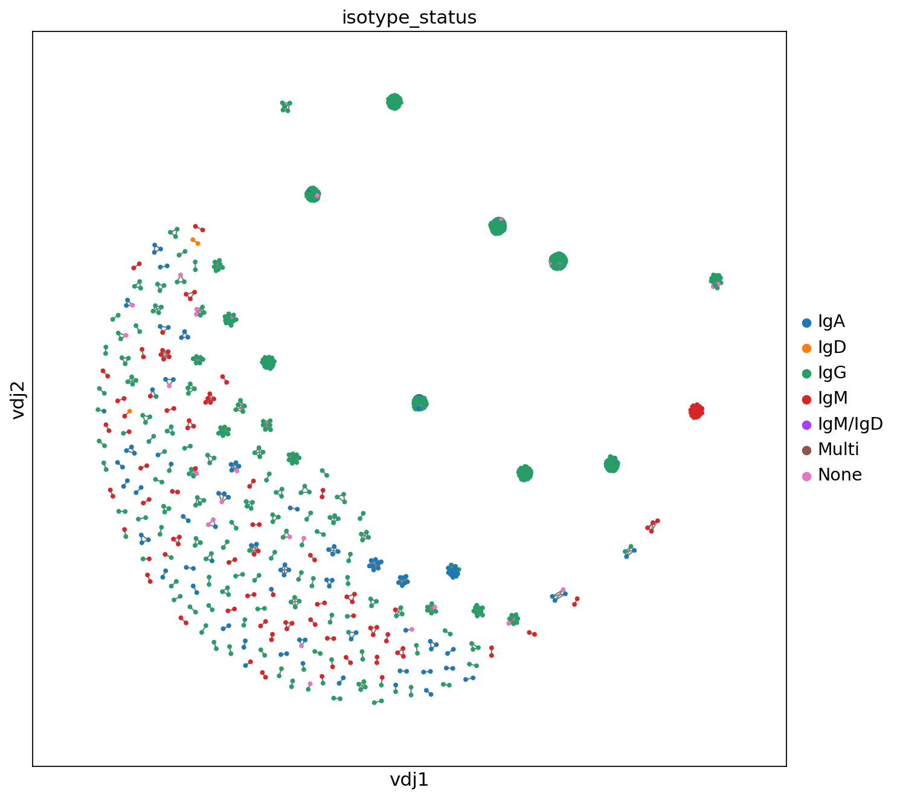
与 Scirpy相比，Dandelion 中的克隆型可视化并不显示其大小（细胞数）。这一步需要单独完成，也就是说，首先需要计算各克隆的大小，并把这一信息传递给 annData 对象，以便通过 Scanpy 进行可视化。
ddl.tl.clone_size(vdjx, clone_key="changeo_clone_id")
ddl.tl.transfer(adata, vdjx, clone_key="changeo_clone_id")
sc.set_figure_params(figsize=[10, 10])
_ = ddl.pl.clone_network(
adata,
color=["changeo_clone_id_size"],
legend_loc="none",
legend_fontoutline=3,
edges_width=1,
size=10,
)
{kind=link}
此外，还可以确定一个最大尺寸，以确立一个阈值，使克隆型得到分组可视化。
ddl.tl.clone_size(vdjx, clone_key="changeo_clone_id", max_size=50)
ddl.tl.transfer(adata, vdjx, clone_key="changeo_clone_id")
_ = ddl.pl.clone_network(
adata,
color=["changeo_clone_id_size_max_50"],
ncols=2,
legend_fontoutline=3,
edges_width=1,
palette="tab20c",
size=20,
)
{kind=link}
41. 基因片段的使用#
与 TCR 分析一样，我们可以观察基因片段的偏好性使用。 Dandelion 通过可视化特定片段和链的丰度，便可分析这一现象。
让我们针对由 50 个以上细胞组成的克隆型，取重链（V(D)J）中的 V 基因片段。请注意，我们忽略多链（multi-chain），因为它们不是有效的受体。 Dandelion 默认情况下不会将它们删除。这可能成为误解的来源。
mpl.rcParams.update(mpl.rcParamsDefault)
_ = ddl.pl.barplot(
vdjx[vdjx.metadata.isotype_status != "Multi"],
clone_key="changeo_clone_id",
color="v_call_VDJ",
min_clone_size=50,
figsize=[15, 8],
)
{kind=link}
正如你先前所见, IGHV3-48 和 IGHV1-18 与图中其余片段相比，这些基因片段的丰度始终更高，这为本文所分析样本中存在强烈的 V 基因偏好性使用提供了证据。
前面的分析可以通过为可视化添加信息来进一步改进。例如，让我们看看这些受偏好的 V 片段是否在不同同种型（isotype）之间共享。
_ = (
ddl.pl.stackedbarplot(
vdjx[vdjx.metadata.isotype_status != "Multi"],
clone_key="changeo_clone_id",
color="v_call_VDJ",
groupby="isotype_status",
min_clone_size=50,
xtick_rotation=90,
figsize=(18, 8),
normalize=True,
),
)
_ = plt.legend(bbox_to_anchor=(1, 1), loc="upper left", frameon=False)
{kind=link}
上面的图显示 IgG 大多使用 V 段 IGHV3-48 和 IGHV1-18。这可能是因为 IgG 是扩增最多的同种型，因此它掩盖了其余同种型的基因片段使用情况。
下图证实了这一点。最大的几个克隆型（大小 > 50 个细胞）中，同种型的丰度几乎全部由 IgG 代表。不过，这张图也为样本所引发的免疫反应提供了额外证据。
_ = ddl.pl.barplot(
vdjx[vdjx.metadata.isotype_status != "Multi"],
clone_key="changeo_clone_id",
color="isotype_status",
min_clone_size=50,
figsize=[10, 10],
)
{kind=link}
41. 谱型#
我们已经识别出关键的扩增克隆型及其所代表的同种型。此外，我们还可以通过谱型，从序列长度的角度观察其优势分布。与前面的分析一样，我们剔除了多链细胞，并保留了大小超过 50 个细胞的那些克隆型，以保持分析的一致性。
下图显示出一种有趣的现象，与我们此前 TCR 分析中明显的谱型优势不同：这里出现了两个序列长度，第一个、也是最主要的，由 23 个氨基酸的序列构成，第二个由 15 个氨基酸的序列构成。
_ = ddl.pl.spectratype(
vdjx[
(vdjx.metadata.isotype_status != "Multi")
& (vdjx.metadata.changeo_clone_id_size > 50.0)
],
color="junction_length",
groupby="v_call",
locus="IGH",
figsize=(10, 10),
)
_ = plt.legend(bbox_to_anchor=(1, 1), loc="upper left", frameon=False)
{kind=link}
41. Motif 序列分析#
谱型分析的结果给了我们一个提示，告诉我们该比较哪些序列、以寻找可能的氨基酸基序。在本例中，我们分析了以下对象的 V 片段 IGHV3-48 和 IGHV1-18 其序列长度分别为 15 和 23 个氨基酸。让我们从第一个比较开始（长度 = 15）。
ddl.tl.transfer(adata, vdjx, clone_key="changeo_clone_id")
motif = compute_motif(
adata[
(adata.obs["IR_VDJ_1_v_call"].isin(["IGHV3-48", "IGHV1-18"]))
& (adata.obs["junction_aa_VDJ"].str.len() == 15),
:,
]
.obs["junction_aa_VDJ"]
.to_list()
)
_ = svg_logo(
motif, "../_static/images/air_repertoire/bcr_logo_motif.svg", color_scheme="taylor"
)
我们观察到，在大多数位置上某些氨基酸明显占主导，只有少数几个位置上有额外的氨基酸参与构成序列基序的格局。尽管如此，所关注的、长度为 15 的 V 片段，其序列组成仍相对稳定。
另一方面，我们对 V(D)J 链分析了相同的 V 基因片段，但序列长度为 23 个氨基酸。
motif = compute_motif(
adata[
(adata.obs["IR_VDJ_1_v_call"].isin(["IGHV3-48", "IGHV1-18"]))
& (adata.obs["junction_aa_VDJ"].str.len() == 23),
:,
]
.obs["junction_aa_VDJ"]
.to_list()
)
_ = svg_logo(
motif, "../_static/images/air_repertoire/bcr2_logo_motif.svg", color_scheme="taylor"
)

41.1. 参考文献#
Peter Ashcroft, Markus G Manz, and Sebastian Bonhoeffer. Clonal dominance and transplantation dynamics in hematopoietic stem cell compartments. PLoS computational biology, 13(10):e1005803, 2017.
Mark Chernyshev, Mateusz Kaduk, Martin Corcoran, and Gunilla B Karlsson Hedestam. Vdj gene usage in igm repertoires of rhesus and cynomolgus macaques. Frontiers in immunology, 2021.
Stanca M Ciupe, Blythe H Devlin, Mary Louise Markert, and Thomas B Kepler. Quantification of total t-cell receptor diversity by flow cytometry and spectratyping. BMC immunology, 14(1):1–12, 2013.
Ang Cui, Roberto Di Niro, Jason A Vander Heiden, Adrian W Briggs, Kris Adams, Tamara Gilbert, Kevin C O’Connor, Francois Vigneault, Mark J Shlomchik, and Steven H Kleinstein. A model of somatic hypermutation targeting in mice based on high-throughput ig sequencing data. The Journal of Immunology, 197(9):3566–3574, 2016.
Yuval Elhanati, Anand Murugan, Curtis G Callan Jr, Thierry Mora, and Aleksandra M Walczak. Quantifying selection in immune receptor repertoires. Proceedings of the National Academy of Sciences, 111(27):9875–9880, 2014.
Namita T Gupta, Jason A Vander Heiden, Mohamed Uduman, Daniel Gadala-Maria, Gur Yaari, and Steven H Kleinstein. Change-o: a toolkit for analyzing large-scale b cell immunoglobulin repertoire sequencing data. Bioinformatics, 31(20):3356–3358, 2015.
Tae-Shin Kim and Eui-Cheol Shin. The activation of bystander cd8+ t cells and their roles in viral infection. Experimental & molecular medicine, 51(12):1–9, 2019.
Kamila Naxerova. Clonal competition in a confined space. Nature Genetics, 52(6):553–554, 2020.
F Nina Papavasiliou and David G Schatz. Somatic hypermutation of immunoglobulin genes: merging mechanisms for genetic diversity. Cell, 109(2):S35–S44, 2002.
Michal Polonsky, Benjamin Chain, and Nir Friedman. Clonal expansion under the microscope: studying lymphocyte activation and differentiation using live-cell imaging. Immunology and Cell Biology, 94(3):242–249, 2016.
Emily Stephenson, Gary Reynolds, Rachel A Botting, Fernando J Calero-Nieto, Michael D Morgan, Zewen Kelvin Tuong, Karsten Bach, Waradon Sungnak, Kaylee B Worlock, Masahiro Yoshida, and others. Single-cell multi-omics analysis of the immune response in covid-19. Nature medicine, 27(5):904–916, 2021.
Ilias S Travlos, Nikolina Cheimona, Ioannis Roussis, and Dimitrios J Bilalis. Weed-species abundance and diversity indices in relation to tillage systems and fertilization. Frontiers in Environmental Science, 6:11, 2018.
Jason A Vander Heiden, Gur Yaari, Mohamed Uduman, Joel NH Stern, Kevin C O’Connor, David A Hafler, Francois Vigneault, and Steven H Kleinstein. Presto: a toolkit for processing high-throughput sequencing raw reads of lymphocyte receptor repertoires. Bioinformatics, 30(13):1930–1932, 2014.
Gur Yaari, Jason A Vander Heiden, Mohamed Uduman, Daniel Gadala-Maria, Namita Gupta, Joel NH Stern, Kevin C O’Connor, David A Hafler, Uri Laserson, Francois Vigneault, and others. Models of somatic hypermutation targeting and substitution based on synonymous mutations from high-throughput immunoglobulin sequencing data. Frontiers in immunology, 4:358, 2013.